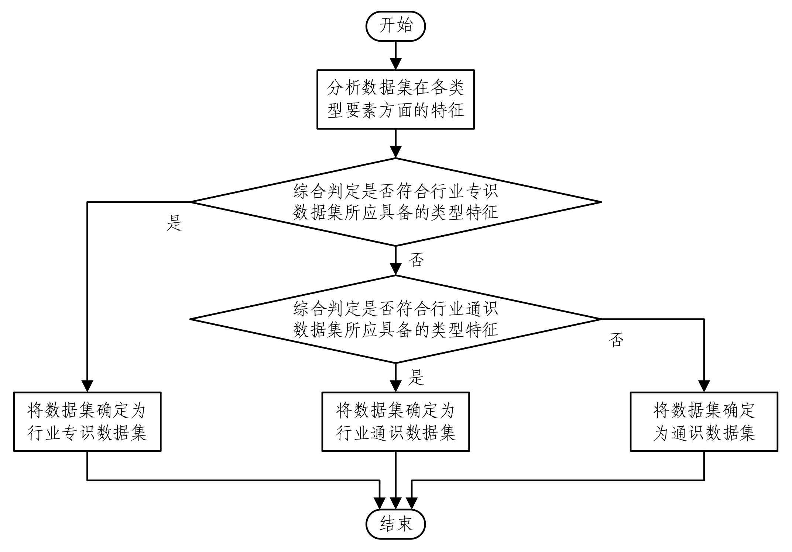
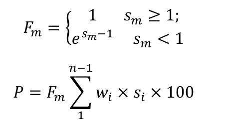

高质量数据集说明
定义：经过采集、加工等数据处理，可直接用于开发和训练人工智能模型，能有效提升模型性能的数据的集合
高质量数据集是开发和训练人工智能模型的重要支撑，能够提高模型精度与可解释性、减少训练时长，已经成为人工智能发展的核心要素
一、建设指南
高质量数据集的建设是一个覆盖数据集全生命周期的系统性工程。国家层面及各行业对高质量数据集提出了明确的建设目标与应用要求。因此，从实际成效出发，以需求为牵引的"场景驱动"模式更契合高质量数据集建设的核心目标和发展方向
"场景驱动"的建设模式以明确的业务需求或场景为起点，通过"需求拆解－数据设计－数据采集－数据处理－数据质量检测－数据运营"的闭环，确保数据集对场景的智能化水平提升，避免"数据冗余"或"数据缺失"。这种模式强调"先有需求或场景，再构建对应的数据支撑"，是目标导向型建设的典型代表。这种建设模式的优势是数据质量高、针对性强，能够有效支撑特定任务的模型训练和评估，易于形成闭环反馈机制，通过模型效果反向优化数据采集和处理流程
建设指南为数据集建设全生命周期，包括数据需求、数据规划、数据采集、数据预处理、数据标注、模型验证等阶段提供建议
建设方法
高质量数据集建设应按照生命周期有序展开，包括数据需求、数据规划、数据采集、数据预处理、数据标注、模型验证等阶段。这六个环节，对医疗数据产品来说，几乎就是一套产品建设路线
1.1 数据需求
数据需求阶段主要是确定人工智能应用对数据的需求，即根据预期人工智能用途明确数据集在数据范围、内容、可用、质量等方面的需求
该阶段包括但不限于：
- 确定数据集所需数据范围、内容等。即根据预期人工智能用途明确具体需要哪些数据，包括数据格式、统计特性和可分性（即训练、验证、测试数据等子集的有效划分说明，包括每个子集的相关统计特性、代表性、合适规模大小等）
- 检查数据集所需要数据的可使用性。即确认用于特定人工智能应用的数据是否可获取并使用
- 构建数据集所需要的数据质量模型。即实例化一个具有相关数据质量特性（例如，完整性、准确性、一致性等）的数据质量模型
1.2 数据规划
数据规划阶段主要是确保所用数据满足需求阶段的要求，同时为使用这些数据完成人工智能应用的目标提供支持
该阶段包括但不限于：
- 设计数据架构。即界定所需数据的全部属性、来源、范围等，以及如何使用这些数据
- 制定具体计划。即制定涵盖数据采集、数据预处理、数据标注、模型验证等阶段的具体计划，包括各阶段实施计划、数据质量计划等，以满足数据规范等方面要求
- 预计工作体量。即预估获得和准备数据以支持特定人工智能应用所需的工作量，可能包括任何必要的数据重组、传输或收集的时间，以及为特定人工智能应用构建数据质量模型的时间
1.3 数据采集
数据采集阶段主要是收集用于特定人工智能应用的数据，即从数据规划阶段所确定的数据源收集的实时和历史数据
该阶段包括但不限于：
- 结合预期数据源确定数据采集方式。即根据所需数据是否已存在并可直接再利用、是否可转化现有数据来满足要求、是否可通过购买或许可获得数据、是否可以生成数据、是否需要采集新数据等情况，确定是以获取和组合现有数据集、生成数据（如模拟数据、合成数据等）、收集数据（如传感器采集、手动输入等）等之中何种方式采集数据
- 测试并在必要时改进数据收集方法。即如需收集新数据，则要测试数据收集方法，在必要时调整相关配置和参数设置、操作条件、传感器规格和安装位置等，以满足相关数据收集规范要求
- 测量并在必要时提升采集数据质量，以降低采集阶段数据质量问题引入下游阶段的风险，避免为下游阶段增加不必要的工作量
1.4 数据预处理
数据预处理阶段主要是将所收集到的数据处理成可供数据标注等后续阶段使用的形式
该阶段涉及以下可选过程：
- 数据转换。以最小的内容损失，将数据从一种表示或空间转换为另一种表示或空间
- 数据验证。根据验证正确性、有意义、安全性、隐私性等数据质量特性，确保数据是正确的
- 数据清洗。检测错误、重复或缺失数据，并通过替换、修改、输入或删除等方式修正数据
- 数据聚合。将两个或多个数据集以汇总的形式合并为一个数据集
- 数据抽样。从数据集中选择数据，抽样可以替换或非替换方式进行
- 特征创建。创建比原始特征更能有效捕捉数据中主要信息的新特征
- 特征选择。使用可用特征的子集来降低数据的维数
- 信息丰富。链接各类数据源，并为数据增加额外的上下文语境
1.5 数据标注
数据标注阶段为可选阶段，主要是针对有监督机器学习，其训练、验证和测试数据需要对单个或多个目标变量赋值，但基于医疗行业，数据标注是数据真正产生价值的重要阶段
该阶段包括但不限于：
- 明确数据标注规程规范
- 明确所需的技能和资源，如标注技能、工具、平台等
- 对数据标注过程进行监督和质量管理
1.6 模型验证
模型验证阶段主要是将所准备的数据用于人工智能模型开发和训练，对模型性能是否达到预期进行评估，已验证数据集是否满足要求
若模型性能达到预期，则表明数据集已满足要求。若模型性能未达到预期，则可采取以下步骤：
- 对于人工智能模型，确定数据集相比于算法，是否为致使模型性能未达到预期的根本原因
- 对模型验证阶段所发现的数据质量问题进行分析，将对模型性能产生不利影响的数据质量问题反馈给上游阶段，以改进相关阶段的数据质量
- 重复数据需求、数据规划、数据采集、数据预处理、数据标注等阶段以提升数据质量
- 重建人工智能模型，对模型性能进行评估
二、格式要求
高质量数据集建设推进过程中，存在数据集格式不规范、不统一的问题。该问题不利于通过统一接口（或脚本程序）对数据集进行读取、使用，进而阻碍数据集流通、应用。制定高质量数据集格式要求，规范其基本元数据及表示方法，明确数据标识、内容、标注、版本、授权、来源等方面要求，对于促进高质量数据集流通、应用，有力支持人工智能模型开发和训练
2.1 元数据属性
每个元数据用7个属性描述，见下表格
数据类型包括日期型、布尔值、字符串、数组、对象、空值等
对于值域，自由文本指用户可以根据需要输入自定义文本内容
对于数据填充要求，"1"表示必须填写，"0"表示可选填写
| 序号 | 属性名 | 定义 |
|---|---|---|
| 1 | 中文名称 | 元数据的中文名称 |
| 2 | 英文名称 | 元数据的英文名称 |
| 3 | 定义 | 元数据含义的解释 |
| 4 | 数据类型 | 元数据有效值的类型 |
| 5 | 值域 | 元数据所允许值的集合 |
| 6 | 数据填充要求 | 元数据的数据填写要求 |
| 7 | 备注 | 元数据的附加注释 |
| ### 2.2 数据元数据 |
| 中文名称 | 英文名称 | 定义 | 数据类型 | 值域 | 数据填充要求 | 备注 |
|---|---|---|---|---|---|---|
| 数据标识 | id | 数据的全域唯一标识 | 字符串 | 应符合NDI-TR-2025-04的要求 | 1 | 无 |
| 关联数据标识 | rid | 与当前数据存在明确关联关系的其他数据的数据标识的集合 | 数组 | 应符合NDI-TR-2025-04的要求 | 0 | 关联数据标识可以是一个或多个数据标识的有序列表 |
| 数据内容 | data_content | 数据的具体内容 | 数组 | 应符合2.3的要求 | 1 | 数据内容可以是单条数据、同一模态的多条数据组合、或不同模态的多条数据组合 |
| 标注信息 | annotation | 数据的标注信息 | 对象 | 应符合2.4的要求 | 0 | 无 |
| 原始时间 | original_time | 数据最初出现或创建的时间 | 日期型 | 应符合GB/T 7408.1-2023的要求 | 1 | 表示数据的原始创建或首次出现时间，而非采集时间 |
| 最后修改时间 | last_modified_time | 数据最后一次被修改或加工的时间 | 日期型 | 应符合GB/T 7408.1-2023的要求 | 1 | 如果数据未经修改或加工，则与原始时间相同 |
| 数据版本 | version | 数据的版本号 | 字符串 | 应符合《语义化版本（Semantic Versioning）》的要求 | 1 | 无 |
| 授权类型 | license | 数据的授权类型 | 字符串 | 开源、公共授权、商业授权、仅内部、其他 | 1 | 无 |
| 来源类型 | source | 数据的来源类型 | 字符串 | 互联网、图书、论文、报告、标准、专利、官方文件、组织机构等 | 1 | 此处列举的是数据的常见来源类型。当数据的来源类型不在列举范围内时，可采用符合实际的其他来源类型表示 |
| 来源详情 | source_details | 来源类型的详细说明 | 字符串 | 自由文本 | 1 | 如互联网数据的URL、图书的ISBN号和页码、论文的发表信息、报告的发布信息、标准的标准号、专利的专利号、官方文件的发文字号、组织机构的具体名称等 |
| 生成数据标志 | generated_data_indicator | 数据是否为生成数据的标志 | 布尔值 | 0、1 | 1 | 此处表示数据是否为生成数据 |
2.3 数据内容元数据
| 中文名称 | 英文名称 | 定义 | 数据类型 | 值域 | 数据填充要求 | 备注 |
|---|---|---|---|---|---|---|
| 模态类型 | media_type | 数据的模态类型 | 数组 | text、image、video、audio等 | 1 | 此处列举的是数据的常见模态类型。当数据的模态类型不在列举范围内时，可采用符合实际的其他模态类型表示 |
| 内容 | content | 数据的具体内容 | 字符串 | 自由文本 | 1 | 文本数据可用数据本身表示(建议使用UTF-8编码)，图像数据可用Base64编码或相对存储路径表示，其他类型数据可用相对存储路径表示 |
2.4 标注信息元数据
| 中文名称 | 英文名称 | 定义 | 数据类型 | 值域 | 数据填充要求 | 备注 |
|---|---|---|---|---|---|---|
| 标签 | label | 数据的标签 | 数组 | 自由文本 | 1 | 具体内容根据数据集所针对的人工智能任务做进一步规定，若数据集的目标人工智能任务为无监督学习任务，数据填充要求为0 |
| 标注方式 | annotation_method | 数据标注的方式 | 字符串 | 人工标注、自动标注、半自动标注、其他 | 0 | 无 |
| 标注人员类型 | annotator | 标注数据的人员类型 | 字符串 | 普通标注员、专业标注员、行业领域专家、其他 | 0 | 无 |
2.5 数据集基本元数据示例
{
"id": "d6c9a4d5e57597df8fe30f09ae44c985",
"rid": [
"13fd8582a808d68b3657548e89eebb4f"
],
"data_content": [
{
"media_type": "image",
"content": "../data/images/streetscape.jpg"
}
],
"annotation": {
"label": [
{
"iscrowd": 0,
"bbox": [
20,
20,
20,
20
],
"category": "human"
},
{
"iscrowd": 0,
"bbox": [
40,
40,
40,
40
],
"category": "car"
}
],
"annotation_method": "人工标注",
"annotator": "普通标注人员"
},
"original_time": "2025-1-1",
"last_modified_time": "2025-1-1",
"version": "1.0.0-alpha",
"license": "其他",
"source": "互联网",
"source_details": "[https://pic4.img.com/v2-145ed.jpg](https://pic4.img.com/v2-145ed.jpg)",
"generated_data_indicator": 0
}
2.6 总结
基础元数据建设表示一条数据，不能只留下"值"，还要留下它是谁、从哪里来、怎么来的、能怎么用、改过没有、谁标注过、是否生成、和哪些数据有关。换成医疗数据，这些就是未来能够被复用、被授权、被交易、被训练、被审计的基础
医疗数据
有了数据标识，数据才开始具备"资产身份"。数据标识是能够在更大范围内被识别、被关联、被追踪的全域唯一标识
数据最有价值的地方，往往不是单个字段，以医疗数据为例，一个检验结果的关联数据标识元数据，如果可以直接关联用药情况、随访结局等，那么这就变成了真实世界证据的一部分
医疗数据天然是多源、多时点、多模态的
- HIS里有诊疗记录
- LIS里有检验数据
- PACS里有影像数据
- EMR里有病程和出院小结
- 麻醉系统里有生命体征
- 随访系统里有结局事件
如果这些数据没有统一关联关系，后续很难形成可解释、可复核、可训练的证据链。所以，高质量医疗数据集的建设，更重要的是建立：
- 患者级关联
- 就诊级关联
- 时间轴关联
- 事件级关联
- 样本级关联
- 标注结果关联
医疗数据不是天然就能训练模型，很多临床数据虽然真实，但并不一定高质量。模型需要明确的目标变量，而临床原始数据里，很多目标变量并不是天然存在的。比如，某段病历文本是否提示药物不良反应？这就需要标注，标注信息，是医疗数据集从"真实世界数据"升级为"高质量数据集"的分水岭
标准中特别设置了标注信息元数据，包括标签、标注方式和标注人员类型，这对医疗行业有很强的现实意义。因为医疗数据的标注，不是简单打标签，它往往需要临床专家参与
- 普通标注员可以做基础分类
- 专业标注员可以做规范化处理
- 行业领域专家才能完成高价值医学判断
高质量数据集不是一次性交付物，而是可以持续维护的版本化产品。 这对医疗数据成果转化尤其重要，标准中要求记录原始时间、最后修改时间和数据版本。如果没有版本管理，数据产品很难长期运营，没有版本，就没有可审计性。没有可审计性，就很难支撑严肃的科研、监管和商业合作
授权类型，是医疗数据产品合规流通的入口。标准中要求记录“授权类型”，包括开源、公共授权、商业授权、仅内部、其他等类型。放在医疗场景里，这一项尤其敏感。因为医疗数据不是普通数据，它涉及患者隐私、医院管理、数据安全、科研伦理、成果转化和国有资产管理。对于医疗数据而言，授权类型不是一个格式字段，它是数据产品合规边界的入口
医疗数据产品的价值，不只来自数据本身，还来自数据来源的可信程度。只有来源清楚，数据产品才有可信度。只有来源可追溯，模型结论才有解释空间。对于医疗数据来说，来源详情不应该只是"某医院数据库"，更应该尽可能记录到：
- 系统来源
- 字段来源
- 文档来源
- 标准来源
- 报告来源
- 指南来源
- 论文来源
- 机构来源
- 采集或生成规则来源
生成数据标志，提醒医疗数据不能混淆真实数据和合成数据。如果一个模型训练集中包含生成数据，但没有明确标识，后续模型性能评价、泛化能力判断、临床可靠性解释都会受到影响
具体总结来说，建设高质量数据集医疗数据至少要做几件事：
- 建立数据唯一标识体系。让患者、就诊、检查、样本、影像、文本、标注结果之间能够形成稳定关联
- 建立多模态数据组织方式。不仅管理结构化字段，也要管理影像、病理、报告、文本、随访等数据内容
- 建立专家标注体系。把临床专家的判断转化为可记录、可复核、可训练的标签资产
- 建立版本管理体系。明确每一次加工、清洗、标注、质控和授权所对应的数据版本
- 建立授权和来源管理体系。让每一项数据产品都能说清楚来源、权属、授权类型和使用边界
- 建立可信交付体系。通过可信数据空间、计算沙箱、TEE或隐私计算环境，实现数据可用不可见、过程可审计、结果可审核
三、分类指南
高质量数据集是开发和训练人工智能模型的重要支撑，通用模型、行业模型、场景模型等不同类型模型需要不同类型的数据集，相应数据集需蕴含通用知识、行业领域通用知识、行业领域专业知识
目前高质量数据集分类目前仍缺乏统一的标准规范，分类指南明确类型划分的类型要素、类型特征、分类方法，为开展高质量数据集分类工作提供指导，对于优化数据集供需匹配，促进数据集流通使用，有力支持人工智能模型开发和训练
术语和定义：
- 通用知识：面向社会公众的通用性知识，具有广泛性、基础性和常识性等特点
- 注：通用知识主要包括基础概念、通用原理和典型事例等方面内容，无需专业背景即可理解和应用
-
通识数据集：蕴含通用知识的数据的集合
-
行业领域通用知识：面向行业领域从业人员的通用性知识，在行业领域内部具有普适性和共识性等特点
- 注： 行业领域通用知识主要包括行业领域基础理论、通用技术和共性业务等方面内容，需要一定的专业背景方可理解和应用
-
行业通识数据集：蕴含行业领域通用知识的数据的集合
-
行业领域专业知识：面向行业领域机构内部业务人员的专业性知识，具有场景针对性、组织机构专属性和实践经验积累性等特点
- 注： 行业领域专业知识主要包括从研发、生产、管理、营销和服务等业务环节中产生和积累的知识，需要较深的行业背景和具体业务经验方可理解和应用
- 行业专识数据集：蕴含行业领域专业知识的数据的集合
3.1 类型划分

3.2 类型要素
高质量数据集可以分为通识、行业通识、行业专识三类，分别主要用于支撑通用、行业、场景模型落地应用。不同类型高质量数据集在多个类型要素方面的特征不同，其中，类型要素包括：
- 知识内容：数据集中数据所蕴含知识的专业性、知识深度和目标受众
- 来源类型：数据集中数据的获取来源，如网络资源、文献类型、系统平台、组织机构等来源
- 时效性：数据集中数据的更新速度或有效期限
- 标注人员类型：对数据集中数据进行标注或审核的人员类型
- 敏感程度：数据集中数据公开后所产生的风险程度
- 模型类型：数据集中数据支持开发和训练人工智能模型的类型
- 主题范围：数据集所涉及通用知识领域、行业领域、业务场景等的范围
3.3 类型特征
不同类型高质量数据集在多个类型要素方面的特征：
| 通识数据集 | 行业通识数据集 | 行业专识数据集 | |
|---|---|---|---|
| 知识内容 | 面向社会普通公众，不需要专业背景即可理解 | 面向行业从业人员，需一定专业背景才能理解 | 面向内部业务人员，需较深专业背景才能理解 |
| 来源类型 | 来源不严格，主要来自百科、问答等互联网资源，综合性书籍等类型文献，以及生成数据 | 来源清晰，主要来自论文、报告、标准等专业文献，行业领域组织机构，以及生成数据 | 来源清晰，主要来自组织机构内部的业务系统、管理平台等系统平台，或文档图纸等文献 |
| 时效性 | 一般在较长时间内稳定，时效性要求较低 | 根据行业领域发展变化，时效性要求中等 | 根据业务场景需求变化，时效性要求较高 |
| 标注人员类型 | 普通标注人员 | 具备学科背景或从业经验的人员 | 行业领域专家 |
| 敏感程度 | 敏感程度较低 | 敏感程度较低 | 敏感程度较高 |
| 模型类型 | 通用模型、行业模型 | 通用模型、行业模型 | 场景模型 |
| 主题范围 | 不属于特定行业领域，主体范围较广 | 聚焦于特定行业领域，主体范围中等 | 聚焦于特定业务场景，主体范围较窄 |
注： - 通用模型。指面向广泛领域、不依赖特定行业知识的人工智能模型 - 行业模型，指针对特定行业领域共性需求开发的人工智能模型 - 场景模型，指聚焦具体业务场景、依赖组织机构内部专业知识的人工智能模型
3.3.1 通识数据集
通识数据集在多个类型要素方面所具备的特征如下：
- 知识内容：数据集中数据所承载信息蕴含的知识面向社会公众，以基础概念、通用原理、典型事例等常识性知识为主，无需专业背景即可理解
- 来源类型：数据集中数据未严格溯源，主要来自百科、问答、互联网平台（短视频类、新闻门户类、用户内容生成类、视听资讯类、新闻机构类等）等网络资源，综合性书籍等类型文献，以及由模拟、合成等技术生成
- 时效性：数据集中数据一般在较长时间内保持稳定，时效性要求较低。如年度国民经济统计公报、重大事件新闻报道等，一经发布即可在较长时间内作为信息参考，较少出现频繁调整变更的情况
- 标注人员类型：数据集中数据通常由普通数据标注员标注，对行业领域专业背景和专业资质等级无特殊要求
- 敏感程度：数据集中数据的敏感程度较低，不涉及国家秘密、工作秘密、商业秘密、个人敏感信息等
- 模型类型：数据集中数据用于支持开展通用模型、行业模型的开发和训练
- 主题范围：数据集不属于特定行业领域，相比于行业通识数据集，主题范围较广
3.3.2 行业通识数据集
行业通识数据集在多个类型要素方面所具备的特征如下：
- 知识内容：数据集中数据所承载信息蕴含的知识聚焦于各行业领域的共性知识，以行业领域的基础理论、通用技术、共性业务为主，面向行业领域的从业人员，需要一定的专业背景才能理解和运用
- 来源类型：数据集中数据来源清晰，主要来自论文、报告、标准、专利、技术文档、非综合性书籍、官方文件等类型文献，行业领域的主管部门、协会、科研机构、企业、出版传媒机构等组织机构，以及由模拟、合成等技术生成
- 时效性：数据集中数据一般根据行业发展和管理需求变化，相对比较稳定，时效性要求高于通识数据集，低于行业专识数据集
- 标注人员类型：数据集中数据通常由行业领域内具备一定学科背景或相关从业经历的人员标注
- 敏感程度：数据集中数据的敏感程度较低，不涉及国家秘密、工作秘密、商业秘密、个人敏感信息等
- 模型类型：数据集中数据用于支持开展通用模型、行业模型的开发和训练
- 主题范围：数据集主要聚焦于行业领域内部，但也应考虑上下游及周边相关行业领域知识对于该行业知识的影响与补充，主题范围中等，介于通识数据集和行业专识数据集之间
3.3.3 行业专识数据集
行业专识数据集在多个类型要素方面所具备的特征如下：
- 知识内容：数据集中数据所承载信息蕴含的知识聚焦于各行业领域组织机构内部的专业知识，以组织机构自身业务中从研发、生产、管理、营销和服务等环节产生和积累的知识为主，面向内部业务人员，需要较深的专业背景和业务经验才能理解和运用
- 来源类型：数据集中数据来源清晰，由组织机构日常生产经营生成和采集，主要来自组织机构内部的业务系统、管理平台等系统平台，或文档图纸等文献
- 时效性：数据集中数据一般根据业务场景需求变化，满足数据处理及时性要求，时效性要求较高
- 标注人员类型：数据集中数据通常由行业领域内具备深厚专业知识、丰富实践经验和高度权威性的专家标注
- 敏感程度：数据集中数据的敏感程度较高，仅供内部特定岗位人员使用，应用前需要明确权限和授权
- 模型类型：数据集中数据用于支撑开展场景模型的开发和训练
- 主题范围：数据集主要聚焦于业务场景，相比于行业通识数据集，主题范围较窄
3.4 分类方法
如3.1章节的图片所示，高质量数据集的类型划分方法如下：
- 分析数据集再3.2章节各个类型要素方面的特征
- 经综合判定，在整体上符合3.3.3章节特征，数据集可确定为行业专识数据集
- 经综合判定，在整体上不符合3.3.3章节特征，而符合3.3.2章节特征，数据集可确定为行业通识数据集
- 经综合判定，在整体上不符合3.3.2章节特征，数据集可确定为通识数据集
3.4.1 医疗数据示例分类方法
五个问题来进行分类：
-
第一，这套数据的知识门槛是什么？
- 普通人能不能理解？
- 如果普通人就能理解，大概率是通识数据
- 如果需要医学背景才能理解，可能是行业通识数据
- 如果必须结合医院业务系统、专科经验和真实诊疗场景才能理解，就更接近行业专识数据
-
第二，这套数据从哪里来？
- 如果主要来自百科、问答、科普内容和互联网资源，通常是通识数据
- 如果主要来自指南、共识、论文、标准、政策和专业文献，通常是行业通识数据
- 如果主要来自医院HIS、LIS、EMR、PACS、病理、随访、科研数据库和内部管理平台，就应重点判断为行业专识数据
-
第三，谁来标注？
- 普通标注员可以完成的，多数不是高门槛医疗数据产品
- 需要医学背景人员参与的，通常进入行业通识层面
- 需要专科专家定义终点、确认变量、复核病例、判断结局的，往往就是行业专识数据集
-
第四，能不能公开流通？
- 如果公开后风险很低，可能是通识或行业通识
- 如果只能在授权范围内、特定环境中、面向特定用途使用，就要按行业专识数据集来管理
-
第五，它支撑什么模型？
- 如果是普通问答模型，是通识数据的逻辑
- 如果是医疗行业共性模型，是行业通识数据的逻辑
- 如果是某个药品、某个病种、某个医院场景、某个临床结局的预测或评价模型，就是行业专识数据的逻辑
3.5 总结
这一章节解决的不是"怎么建数据集"，而是"先把数据集分清楚"
医疗数据
三类高质量数据集，在医疗数据中可以理解为：
- 通识数据集。解决的是普通公众也能理解的基础知识问题
- 行业通识数据集。解决的是医疗行业从业人员普遍需要理解的专业知识问题
- 行业专识数据集。解决的是医院、科室、专病、临床场景中沉淀出来的业务知识和真实诊疗数据问题
通识数据集不是医疗数据的核心，但决定模型的基础理解能力。这类数据的特点是知识门槛低、敏感程度低、主题范围广
行业通识数据集让模型真正进入"医学语境"，这类数据面向医疗行业从业人员，需要一定专业背景才能理解。它解决的是"懂医学规则"的问题。放到医疗行业里，典型内容包括：
- 医学指南
- 专家共识
- 临床路径
- 药品说明书
- 医保政策
- 疾病诊疗规范
- 检验检查标准
- 医学术语体系
- 真实世界研究方法学文件
- 高质量数据集建设标准
- 药物经济学评价指南
因此，行业通识数据集适合用于建设医疗行业模型、医学知识库、科研辅助系统、药械企业医学事务平台和临床科研智能体。但它仍然不是医疗数据最核心的数据资产。因为它主要来自公开文献、标准、指南、报告和专业文件
行业专识数据集是医疗数据的核心资产，医院HIS、EMR、LIS、PACS、病理系统、手术麻醉系统、随访系统、专病数据库中长期沉淀下来的数据，经过治理、脱敏、标注、质控、版本管理和专家复核后形成的数据集，才是典型的行业专识数据集。比如：
- 某医院肺癌真实世界高质量数据集
- 某检验项目与心血管结局关联分析数据集
- 某病种多中心专病队列数据集
四、质量评测规范
数据集是开发和训练人工智能模型的基础，开发和训练高质量的模型也对数据集质量提出越来越高的要求。对数据集进行质量评测是评判其是否"高质量"的基本路径，也是"以评促建"保障高质量数据集建设的重要手段，然而，高质量数据集质量评测目前仍缺乏统一的标准规范
制定高质量数据集质量评测规范，明确其质量评测的指标要求和评测细则，为开展高质量数据集质量评测工作提供指导，对于提升数据集优质供给，促进数据集流通使用，有力支持人工智能模型开发和训练
4.1 指标要求
4.1.1 评测指标
高质量数据集的质量要求应覆盖说明文档、数据质量及模型应用三个维度的指标：
- 说明文档：数据集的说明文档应完整，包含基本信息、内容特征、建设过程及应用说明等
- 数据质量：数据集中数据的质量应满足人工智能模型开发和训练的基本要求
- 模型应用：数据集应能有效支撑目标人工智能模型的开发和训练
4.1.2 说明文档指标要求
说明文档指标要求包括以下子指标：
- 基本信息完整性：数据集说明文档应包含数据集规模（如样本数量、存储体积等）、格式规范、文件结构、访问渠道、技术支持方式等基本信息
- 内容特征完整性：数据集说明文档应包含模态类型、数据分布情况、标签类别统计、样本示例、局限性说明等内容特征
- 建设过程完整性：数据集说明文档应包含数据来源、采集方法、加工处理流程、标注规范、版本控制等建设过程
- 应用说明完整性：数据集说明文档应包含使用许可、目标应用场景、评估方法、基准测试结果、典型应用案例等应用说明
4.1.3 数据质量指标要求
数据质量指标要求包括以下子指标：
- 格式规范性：数据集中数据的格式应符合预定标准，可直接用于人工智能模型开发和训练
- 安全规范性：数据集中数据应符合人工智能模型开发和训练的安全要求，不包含违反社会主义核心价值观的内容、歧视性内容、商业违法违规、侵犯他人合法权益等非法内容
- 标注规范性：数据集中数据的标注应符合预定的标注规范，遵循预先设定的规范化流程
- 结构完整性：数据集中数据应填充完整，不包含缺失值或缺失值应在合理范围内
- 内容真实性：数据集中数据真实可追溯。非生成数据能追溯到采集源头，能与采集源头保持一致，不存在未经说明的篡改；生成数据能追溯到生成算法和过程，且能符合目标场景真实数据的分布规律
- 内容一致性：数据集中相关联的数据间内容一致，能在语义和表达上保持匹配，包括不同模态数据间的一致性和同模态数据间的一致性
- 类型一致性：数据集中数据符合其所属数据集类型的要求，通识数据集中数据应蕴含通用知识，行业通识数据集中数据应蕴含行业领域通用知识，行业专识数据集中数据应蕴含行业领域专业知识
- 内容干净性：数据集中数据经过严格清洗处理，不包含脏数据（针对不同模态数据的内容干净性评测细则见4.3章节）
4.1.4 模型应用指标要求
模型应用指标要求包括以下子指标：
- 内容多样性：数据集的数据分布全面程度应满足目标应用场景人工智能模型开发和训练的要求
- 规模完整性：数据集的规模满足目标应用场景人工智能模型开发和训练的要求
- 内容时效性：数据集中数据的采集时间和更新状态满足目标应用场景人工智能模型开发和训练的要求
- 标注准确性：数据集中数据的标注能精准标记出目标应用场景人工智能模型开发和训练所需的所有信息
- 模型适配性：数据集应能有效提升目标应用场景人工智能模型的性能
4.2 评测细则
4.2.1 评测整体要求
数据集需要同时满足说明文档指标、数据质量指标和模型应用指标的要求，方可认定为高质量数据集
具体要求为：说明文档指标得分达到90分及以上，数据质量指标得分达到90分及以上，模型应用指标得分达到90分及以上。任一指标不满足要求的数据集不能认定为高质量数据集
4.2.2 说明文档指标
4.2.2.1 说明文档指标计算细则
说明文档指标的计算方式：
| 指标编号 | 子指标名称 | 目标数据形式 | 指标描述 | 计算方法 |
|---|---|---|---|---|
| 0101 | 基本信息完整性 | 数据集 | 数据集说明文档满足基本信息完整性要求的方面比例 注：基本信息完整性所要求的方面包括数据集规模、格式规范、文件结构、访问渠道、技术支持方式等 |
$𝑋= 𝐴/𝐵$ 式中： 𝐴= 数据集说明文档满足基本信息完整性要求的方面数量 𝐵= 数据集说明文档需要满足基本信息完整性要求的方面总数 |
| 0102 | 内容特征完整性 | 数据集 | 数据集说明文档满足内容特征完整性要求的方面比例 注：内容特征完整性所要求的方面包括模态类型、数据分布情况、标签类别统计、样本示例、局限性说明等 |
$𝑋= 𝐴/𝐵$ 式中： 𝐴= 数据集说明文档满足内容特征完整性要求的方面数量 𝐵= 数据集说明文档需要满足内容特征完整性要求的方面总数 |
| 0103 | 建设过程完整性 | 数据集 | 数据集说明文档满足建设过程完整性要求的方面比例 注：建设过程完整性所要求的方面包括数据来源、采集方法、加工处理流程、标注规范、版本控制记录等 |
$𝑋= 𝐴/𝐵$ 式中： 𝐴= 数据集说明文档满足建设过程完整性要求的方面数量 𝐵= 数据集说明文档需要满足建设过程完整性要求的方面总数 |
| 0104 | 应用说明完整性 | 数据集 | 数据集说明文档满足应用说明完整性要求的方面比例 注：应用说明完整性所要求的方面包括使用许可、目标应用场景、评估方法、基准测试结果、典型应用案例等 |
$𝑋= 𝐴/𝐵$ 式中： 𝐴= 数据集说明文档满足场景说明完整性要求的方面数量 𝐵= 数据集说明文档需要满足场景说明完整性要求的方面总数 |
注： 数据形式是指计算相应评测指标所基于的数据单位，主要包括数据记录、数据集等类型
4.2.2.2 说明文档指标评分细则
说明文档指标的得分确定可基于以下公式：$𝑃= ∑𝑤𝑖× 𝑠𝑖× 100$
其中，𝑃为数据集的说明文档指标得分，𝑖为说明文档指标中子指标的索引号，𝑛为说明文档指标中子指标的数量，𝑤𝑖为第𝑖项子指标的计算权重，𝑠𝑖为数据集在第𝑖项子指标上的得分取值
说明文档指标评分采用百分制，当得分达到90分及以上时，视为符合高质量数据集的说明文档指标要求。各子指标权重可根据实际应用场景和评测需求进行调整，建议各子指标权重相等时取值为0.25
4.2.3 数据质量指标
4.2.3.1 数据质量指标计算细则
数据质量指标的计算方法：
| 指标编号 | 子指标名称 | 目标数据形式 | 指标描述 | 计算方法 |
|---|---|---|---|---|
| 0201 | 格式规范性 | 数据记录 | 数据集中格式符合预定标准的数据记录比例 注：预定标准是指相关标准、惯例或其他用户自定义规则 |
$𝑋= 𝐴/𝐵$ 式中： 𝐴= 数据集中格式符合预定标准的数据记录数量 𝐵= 数据集中的数据记录总数 |
| 0202 | 安全规范性 | 数据记录 | 数据集中符合人工智能模型开发和训练安全要求的数据记录的比例 | $𝑋= 𝐴/𝐵$ 式中： 𝐴= 数据集中符合人工智能模型开发和训练安全要求的数据记录数量 𝐵= 数据集中的数据记录总数 |
| 0203 | 标注规范性 | 数据记录 | 数据集中符合预定标注规范的数据记录比例 注：预定标注规范是指数据标注方面相关标准、惯例或其他用户自定义规则；无监督机器学习等不需要标注的应用场景不适用 |
$𝑋= 𝐴/𝐵$ 式中： 𝐴= 数据集中符合预定标注规范的数据记录数量 𝐵= 数据集中的数据记录总数 |
| 0204 | 结构完整性 | 数据记录 | 数据集中缺失值在合理范围内的数据记录比例 | $𝑋= 𝐴/𝐵$ 式中： 𝐴= 数据集中缺失值在合理范围内的数据记录数量 𝐵= 数据集中的数据记录总数 |
| 0205 | 内容真实性 | 数据记录 | 数据集中真实可追溯的数据记录比例 | $𝑋= 𝐴/𝐵$ 式中： 𝐴= 数据集中真实可追溯的数据记录数量 𝐵= 数据集中的数据记录总数 |
| 0206 | 内容一致性 | 数据记录 | 数据集中内容一致的数据记录比例 注：包括不同模态数据间的内容一致和同模态数据间的内容一致 |
$𝑋= 𝐴/𝐵$ 式中： 𝐴= 数据集中内容一致的数据记录数量 𝐵= 数据集中的数据记录总数 |
| 0207 | 类型一致性 | 数据记录 | 数据集中符合其所属数据集类型要求的数据记录比例 | $𝑋= 𝐴/𝐵$ 式中： 𝐴= 数据集中符合其所属数据集类型要求的数据记录的数量 𝐵= 数据集中的数据记录总数 |
| 0208 | 内容干净性 | 数据记录 | 数据集中内容干净的数据记录比例 | $𝑋= 𝐴/𝐵$ 式中： 𝐴= 数据集中内容干净的数据记录数量 𝐵= 数据集中的数据记录总数 |
4.2.3.2 数据质量指标评分细则
数据质量指标的得分确定可基于以下公式：$𝑃= ∑𝑤𝑖× 𝑠𝑖× 100$
其中，𝑃为数据集的数据质量指标得分，𝑖为数据质量指标中子指标的索引号，𝑛为数据质量指标中子指标的数量，𝑤𝑖为第𝑖项子指标的计算权重，𝑠𝑖为数据集在第𝑖项子指标上的得分取值
数据质量指标评分采用百分制，当得分达到90分及以上时，视为符合高质量数据集的数据质量指标要求。各子指标权重可根据实际应用场景和评测需求进行调整，建议各子指标权重相等时取值为0.125
对于无监督机器学习，"标注规范性"子指标不适用，权重取值为0，其余子指标权重需进行适当调整
4.2.4 模型应用指标
4.2.4.1 模型应用指标计算细则
模型应用指标的计算方式：
| 指标编号 | 子指标名称 | 目标数据形式 | 指标描述 | 计算方法 |
|---|---|---|---|---|
| 0301 | 内容多样性 | 数据集 | 数据集的数据分布全面程度满足目标应用场景人工智能模型开发和训练需求的比例 | $𝑋= 𝐴/𝐵$ 式中： 𝐴= 数据集分布覆盖范围 𝐵= 目标应用场景人工智能模型开发和训练所需的数据集分布覆盖范围 |
| 0302 | 规模完整性 | 数据集 | 数据集规模满足目标应用场景人工智能模型开发和训练所需规模的比例 | $𝑋= 𝐴/𝐵$ 式中： 𝐴= 数据集规模 𝐵= 目标应用场景人工智能模型开发和训练所需的数据集规模 |
| 0303 | 内容时效性 | 数据记录 | 数据集中满足目标应用场景人工智能模型开发和训练对采集时间和更新状态要求的数据记录比例 | $𝑋= 𝐴/𝐵$ 式中： 𝐴= 数据集中满足目标应用场景对采集时间和更新状态要求的数据记录数量 𝐵= 数据集中的数据记录总数 |
| 0304 | 标注准确性 | 数据记录 | 数据集中能精准标记出目标应用场景人工智能模型开发和训练所需所有信息的数据记录比例 注：无监督机器学习等不需要标注的应用场景不适用 |
$𝑋= 𝐴/𝐵$ 式中： 𝐴= 数据集能精准标记出目标应用场景人工智能模型开发和训练所需所有信息的数据记录数量 𝐵= 数据集中的数据记录总数 |
| 0305 | 模型适配性 | 数据集 | 利用数据集训练的人工智能模型在目标应用场景中达到预期性能水平的程度 注：使用数据集开发和训练模型，通过对比模型实际性能与预期性能的差异，衡量数据集的模型适配性 |
$𝑋= 𝐴/𝐵$或$𝑋= 𝐵/𝐴$ 式中： 𝐴= 使用数据集开发和训练的人工智能模型在目标应用场景的性能 𝐵= 目标应用场景人工智能模型的预期性能 注：𝑋的计算方式取决于指标的选择，对于期望值越高越好的指标用𝐴/𝐵计算；对于期望值越低越好的指标用𝐵/𝐴计算 |
4.2.4.2 模型应用指标评分细则
模型应用指标的得分确定可基于以下公式：

其中，𝑃为数据集的模型应用指标得分，𝑖为模型应用指标中子指标的索引号（不包括模型适配性），𝑛为模型应用指标中子指标的数量，𝑤𝑖为第𝑖项子指标的计算权重，𝑠𝑖为数据集在第𝑖项子指标上的得分取值；𝐹𝑚为模型适配性指示函数，𝑠𝑚为模型适配性子指标的得分取值
模型应用指标评分采用百分制，当得分达到90分及以上时，视为符合高质量数据集的模型应用指标要求。各子指标权重可根据实际应用场景和评测需求进行调整，建议各子指标权重相等时取值为0.25
对于无监督机器学习，“标注准确性”子指标不适用，权重取值为0，其余子指标权重需进行适当调整
4.3 不同模态数据内容干净性指标细则
文本数据内容干净性指标细则
| 指标编号 | 指标名称 | 指标描述 |
|---|---|---|
| 02080101 | 文本困惑程度（PPL） | 文本的语言流畅度水平，困惑度数值越小表示文本内容越通顺自然，越符合语言表达规律 |
| 02080102 | 知识信息密度 | 文本中包含有效知识信息的丰富程度 |
| 02080103 | 重复内容程度 | 文档、段落、句子之间存在重复内容的程度 |
| 02080104 | 文本完整程度 | 文本内容过短或不完整的程度 |
| 02080105 | 信息缺失程度 | 标题、句子、段落等关键结构要素的缺失程度 |
| 02080106 | 文本纯净程度 | 广告、页码、特殊符号、乱码等干扰内容的存在程度 |
| 02080107 | 文本连贯程度 | 主题与内容的一致性以及是否存在异常截断、错别字等问题 |
图像数据内容干净性指标细则
| 指标编号 | 指标名称 | 指标描述 |
|---|---|---|
| 02080201 | 图像分辨率 | 图像的像素尺寸大小，通常以宽×高像素表示。分辨率越高，视频的细节和清晰度越好 |
| 02080202 | 图像重复度 | 数据集中相同或高度相似图像的重复程度 |
| 02080203 | 图像信噪比 | 图像中有效信号与噪声的比值，数值越高表示图像质量越好，噪声干扰越少 |
| 02080204 | 图像清晰度 | 图像的视觉清晰程度，不应存在水印、抖动、字幕干扰、条纹等问题 |
视频数据内容干净性指标细则
| 指标编号 | 指标名称 | 指标描述 |
|---|---|---|
| 02080301 | 视频分辨率 | 视频的像素尺寸大小，通常以宽×高像素表示。分辨率越高，视频的细节和清晰度越好 |
| 02080302 | 视频重复度 | 数据集中相同或高度相似视频的重复程度 |
| 02080303 | 视频帧率（FPS） | 视频每秒播放的帧数，帧率越高，视频播放越流畅 |
| 02080304 | 视频时长 | 视频文件的播放时间长度，时长过短可能导致内容不完整或信息量不足 |
| 02080305 | 视频清晰度 | 视频的视觉清晰程度，不应存在水印、抖动、字幕遮挡、条纹等问题 |
| 02080306 | 视频动态范围 | 视频可以表现的亮度和暗度的范围。HDR（高动态范围）视频的动态范围比 SDR（标准动态范围）视频更大 |
音频数据内容干净性指标细则
| 指标编号 | 指标名称 | 指标描述 |
|---|---|---|
| 02080401 | 音频信噪比 | 音频信号与背景噪声的比值，信噪比越高表示音频质量越好，噪声干扰越少 |
| 02080402 | 信号失真比 | 音频中目标信号与噪声、干扰等信号的强度比值，数值越高表示音频质量越好 |
| 02080403 | 音频采样率 | 音频数据的采样频率，采样率越高，音频还原度越好 |
| 02080404 | 音频位深度 | 音频数据的量化精度，位深度越高，音频的动态范围和分辨率越好 |
| 02080405 | 音频比特率 | 音频数据的传输速率，比特率越高，音频质量通常越好 |
| 02080406 | 音频时长 | 音频文件的播放时间长度，时长过短可能导致内容不完整或信息量不足 |
4.4 总结
此章节把"高质量"从一句形容词，变成了一套可以检查、可以打分、可以比较、可以改进的评测体系，解决了一个问题，这套数据集，能不能证明自己是高质量？
医疗数据
医疗数据产品的质量，不是看"有没有数据"，而是看三件事：
- 能不能说清楚
- 数据本身靠不靠谱
- 能不能真正支撑目标模型和目标应用
这三件事就是质量评测中的说明文档、数据质量、模型应用
一套医疗数据，不仅要有数据，还要有说明书；不仅要能看，还要能查；不仅要能用，还要能证明它对模型和研究真的有帮助
医疗数据说明文档至少清楚四类内容：
- 基本信息：基本信息的意义在于使用方要知道这套数据能不能接入、能不能调用、能不能复现
- 内容特征：如果一个数据产品只说"覆盖某病种患者"，但不说明人群分布、变量分布、标签构成和适用边界，使用方很难判断它能不能支撑目标研究
- 建设过程：决定了数据能不能被信任，医疗数据，一旦涉及真实世界研究、医保价值评价和模型训练，建设过程比最终表格更重要
- 应用说明：医疗数据不是简单"给一份数据"，它是一套带有使用边界、应用场景、评估方法和交付条件的数据服务能力
医疗数据质量控制按质量评测分为八个维度：
-
格式是否规范
- 不同医院、不同系统、不同科室的数据格式经常不一致，同一个检验项目，可能有不同名称，同一个药品，可能有商品名、通用名、规格名，如果格式不规范，数据就很难直接用于模型训练
-
安全是否规范
- 医疗数据不能只考虑数据能不能用，还要考虑能不能安全使用
- 是否包含不应出现的个人敏感信息，是否存在违法违规内容，是否存在不适合进入训练语料的风险信息，是否完成必要的脱敏、匿名化和权限控制
-
标注是否规范
- 医疗数据最怕的不是没有标注，而是标注口径不一致
- 比如"治疗有效"如何定义？"疾病进展"看影像、看医生记录，还是看换药。"低氧事件"按最低血氧，还是按持续时间
-
结构是否完整
- 医疗真实世界数据天然存在缺失，但缺失不是不能接受。关键是缺失是否在合理范围内，是否知道缺失在哪里，是否会影响目标应用。核心变量的缺失情况，就不能只用一句"部分缺失"带过
-
内容是否真实
- 医疗数据非生成数据要能追溯到采集源头
- 生成数据要能追溯到生成算法和过程，并且符合目标场景真实数据的分布规律
- 不能把生成数据混在真实数据里不说明
-
内容是否一致
- 医疗数据经常是多系统数据汇集，HIS里有诊断、LIS里有检验、PACS里有影像等，这些数据之间必须能对得上
- 如果患者的检查时间晚于结局时间，用药记录和医嘱记录不一致，检验单位不同却直接合并分析，这些不一致错误是会影响模型和研究结论的数据质量问题
-
类型是否一致
- 数据集属于通识、行业通识，还是行业专识，不能只是标题上写一写
- 数据内容本身要符合它所属类型的要求，如果是医院专病数据要体现真实业务场景、专科知识、专家标注和临床实践积累。不能拿一堆公开指南、医学科普和文献摘要，包装成医院行业专识数据集
-
内容是否干净
- 文本数据要看是否有乱码、广告等、图像数据要看分辨率、重复度等，详细的内容干净指标见4.3节
- 医疗数据天生多模态，所以未来医疗高质量数据集一定不只是结构化表格还会包括病理图像、内镜视频、影像资料、语音随访、报告文本、多模态病历。多模态数据一旦进入模型训练，内容干净性就会直接影响模型能力
医疗数据高质量数据集不是为了建库而建库，它最终要服务模型开发和训练，此章节的模型应用指标对医疗数据尤其重要：
-
内容是否多样
- 目标人群是否覆盖足够全面，如果数据只覆盖单一人群，模型就容易在真实使用中失效
- 轻症、重症、老年、合并症、不同治疗方案、不同结局是否都有覆盖
-
规模是否完整
- 样本量是否满足目标应用。不是越大越好，而是要和研究目标、结局发生率、变量数量、模型复杂度相匹配
- 一个低发生率结局模型，如果阳性事件太少，样本总量再大也可能不够
-
内容是否及时
- 医疗数据有很强时效性。治疗方案会变、药品会变、指南会变、医保政策会变、检测设备和诊疗路径也会变
- 如果数据过旧，可能无法代表当前真实临床
-
标注是否准确
- 模型训练需要的信息，是否被准确标记出来。医疗模型的上限，很多时候不是算法决定的，而是标签质量决定的
- 终点事件、暴露因素、时间窗口、治疗线数、疗效评价、并发症、不良反应，这些关键标签是否可靠
-
模型是否适配
- 用这套数据训练或验证模型后，模型性能有没有达到预期。真正的高质量，要经得起应用结果检验
- AUC、灵敏度、特异度、校准度、决策曲线、外部验证表现，是否符合目标场景要求
- 如果一套数据看起来很完整，但模型训练效果并不好，就不能简单说它是高质量
医疗高质量数据最后的评测细则，上述的说明文档、数据质量、模型应用都要按照细则计算，每项得分90分以上，才能认定为高质量数据集。评测细则说明高质量数据集不是单项优秀，而是系统合格。说明文档不完整，别人看不懂、用不好、审不了。数据质量不过关，模型可能学错、研究可能偏倚、结果可能失真。模型应用不达标，说明这套数据并没有真正支撑目标场景
医疗高质量数据集更合理的建设方式，是从一开始就按产品思路建设：
- 立项时明确目标应用场景
- 建设时同步形成说明文档
- 治理时同步建立质量指标
- 标注时同步固化专家规则
- 交付前完成质量评测
- 授权后持续跟踪模型应用表现
这样形成的数据集，才是可以持续复用、持续授权、持续评估、持续升级的医疗数据
五、相关规范
5.1 NDI-TR-2025-04
国家数据基础设施标识管理规范。这份报告规定了数据的全域唯一标识（ID）的编码规则、生成算法以及关联数据标识（RID）的结构要求
5.2 GB/T 7408.1-2023
日期和时间 信息交换表示法 第1部分：基本原则。规定了日期和时间的规范表达方式
5.3 语义化版本（Semantic Versioning）
版本格式：主版本号.次版本号.修订号，版本号递增规则如下： 1. 主版本号：当你做了不兼容的 API 修改， 2. 次版本号：当你做了向下兼容的功能性新增， 3. 修订号：当你做了向下兼容的问题修正
六、参考文献
- 【1】TC609-5-2025-01 高质量数据集 建设指南
- 【2】TC609-5-2025-02 高质量数据集 格式要求
- 【3】TC609-5-2025-03 高质量数据集 分类指南
- 【4】TC609-5-2025-04 高质量数据集 质量评测规范